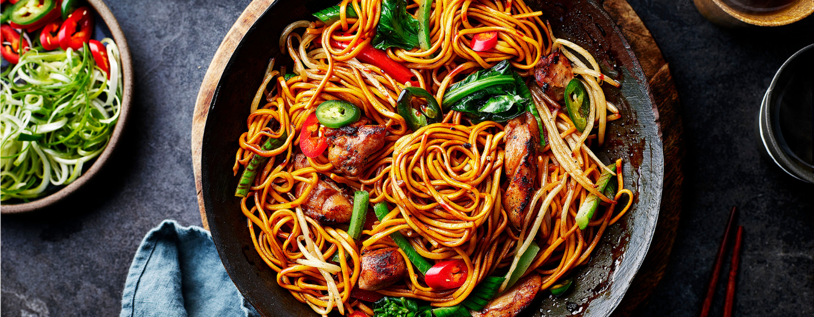

Chowmein

Description
Chowmein is a delicious stir-fried noodle dish loved across Nepal. It is
made with noodles, vegetables, and optional meat, seasoned with soy sauce
and spices.
Ingredients
- Noodles
- Carrot
- Cabbage
- Capsicum
- Onion
- Soy sauce
- Salt and pepper
- Oil
Steps
- Boil noodles in hot water until soft, then drain and keep aside.
- Heat oil in a pan and sauté onions and garlic.
- Add chopped vegetables and stir-fry for a few minutes.
- Add the noodles and mix well with soy sauce, salt, and pepper.
- Stir-fry for 2–3 minutes until evenly mixed.
- Serve hot with ketchup or chili sauce.
Back to Home Page